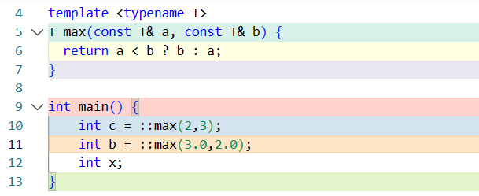
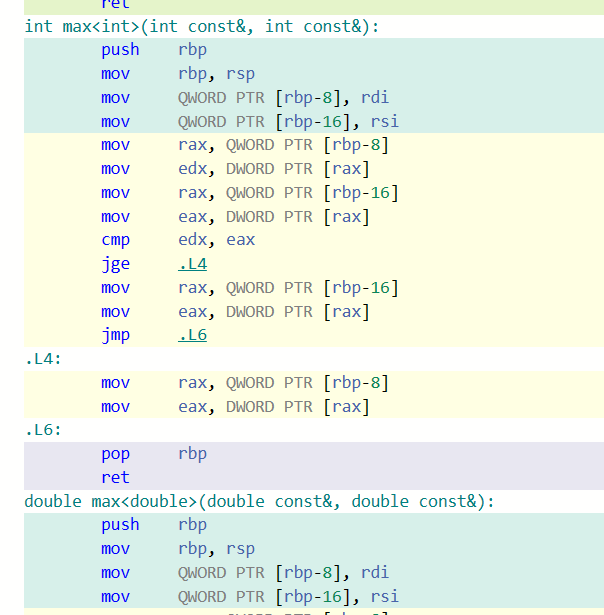
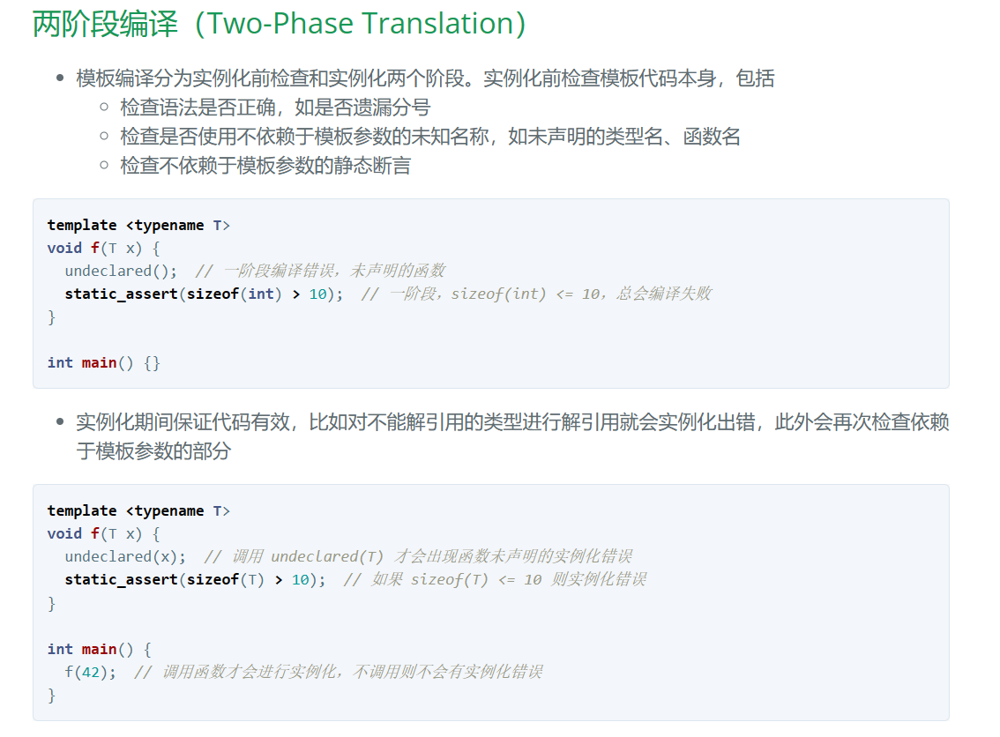

2024-05-09
C++ templates精粹
2024-05-09
C++
这篇文章主要来源于C++ Templates一书，英文为《C++ Templates: The Complete Guide》
函数模板
初探函数模版
函数模板提供了一种函数行为，该函数行为可以使用多种不同的类型进行调用
template <typename T>
T max(const T& a, const T& b) {
return a < b ? b : a;
}
像这样的一个模板指定了一个“返回两个值中的最大者”的函数家族 ，这两个值是通过函数参数a和b传递给改函数模板的，此时参数的类型还未确定，就用模板参数T来确定。
一般的，模板参数就必须使用如下的语法来声明
template <comma-separated-list-of-parameters>
//template<用逗号隔开的参数列表>
在我们这个例子力，参数列表是typename T 。这个typename是一种关键字，到目前位置它是c++程序使用最广泛的模板参数，同样地可以用其他的没错，比如鉴于历史原因可能会有class来代替typename
函数模板通常不用声明为 inline，唯一例外的是特定类型的全特化，因为编译器可能忽略 inline，函数模板是否内联取决于编译器的优化策略
对于你定义的模版，并不是吧模板编译成一个可以处理任何类型的单一实体，而是对于实例化模版岑书的每种类型，都从模板中产生一个不同的实体,比如下面这个例子


最终编译结果中有两个独立的实例存在，而对于一开始定义的模板而言并没有单独的编译过程，而且这样的实例化过程是自动的。因此我们得到一些结论：模板在被使用时被调用了两次：
实例化之前，先检查模板代码本身，查看语法是否正确，在这里会发现错误的语法，比如说什么分号遗漏，类型错误等
在实例化期间，检查模板代码，查看是否所有的调用都有效

注意，实参的演绎是不允许自动类型转换的，你可以强制类型转换或者显式指定
模板参数
函数模板有两种类型的参数：
模板参数：位于函数模板名称的前面，在一对尖括号内部进行声明
调用参数：位于函数模板名称之后，在一对圆括号内部进行声明
template <typename T>
...max(T const& a ,T const& b)
同样地，函数模板也可以被重载，一般就是重载的参数数量，和普通非模板函数重载
模板实参推导
#include <cassert>
#include
namespace jc {
template
T max(const T& a, const T& b) {
return a < b ? b : a;
}
} // namespace jc
int main() {
assert(jc::max(1, 3) == 3); // T 推断为 int
assert(jc::max(1.0, 3.14) == 3.14); // T 推断为 double
std::string s1 = "down";
std::string s2 = "demo";
assert(jc::max(s1, s2) == "down"); // T 推断为 std::string
}
调用模板时，如果不显式指定模板参数类型，则编译器会根据传入的实参推断模板参数类型
字符串字面值传引用会推断为字符数组
（传值则推断为 const char*，数组和函数会 decay 为指针）
对于推断不一致的情况，可以显式指定类型而不使用推断机制，或者强制转换实参为希望的类型使得推断结果一致
#include <cassert>
#include
namespace jc {
template <typename T, typename U>
T max(const T& a, const U& b) {
return a < b ? b : a;
}
} // namespace jc
int main() {
std::string s = "demo";
assert(jc::maxstd::string("down", "demo") == "down");
assert(jc::max(std::string{"down"}, s) == "down");
}
namespace jc {
template <typename T, typename U>
T max(const T& a, const U& b) {
return a < b ? b : a;
}
} // namespace jc
int main() {
assert(jc::max(1, 3.14) == 3); // T 推断为 int，返回值截断为 int
assert(jc::max(1, 3.14) == 3.14);
}
模板实参不能推断返回类型，必须显式指定 （C++14 允许 auto 作为返回类型）
#include <cassert>
namespace jc {
template <typename RT, typename T, typename U>
RT max(const T& a, const U& b) {
return a < b ? b : a;
}
} // namespace jc
int main() {
assert(jc::max(1, 3.14) == 3.14);
assert((jc::max<double, int, int>(1, 3.14) == 3));
}
type traits
对于类型进行计算的模板称为 type traits，也可以称为元函数，比如用 std::common_type 来计算不同类型中最通用的类型（我理解的话像是找最近公共父类这样子？）
#include <cassert>
#include
namespace jc {
template <typename T, typename U, typename RT = std::common_type_t<T, U>>
RT max(const T& a, const U& b) {
return a < b ? b : a;
}
} // namespace jc
int main() { assert(jc::max(1, 3.14) == 3.14); }
重载
1.当类型同时匹配普通函数和模板时，优先匹配普通函数
2.模板参数不同就会构成重载，如果对于给定的实参能同时匹配两个模板，重载解析会优先匹配更特殊的模板，如果同样特殊则产生二义性错误
#include <cassert>
namespace jc {
template <typename T, typename U>
int f(const T&, const U&) {
return 1;
}
template <typename RT, typename T, typename U>
int f(const T& a, const U& b) {
return 2;
}
} // namespace jc
int main() {
assert(jc::f(1, 3.14) == 1);
assert(jc::f(1, 3.14) == 2);
// jc::f(1, 3.14); // 二义性错误
}
注意不能返回 C-style 字符串的引用
namespace jc {
template
const T& f(const char* s) {
return s;
}
} // namespace jc
int main() {
const char* s = "downdemo";
jc::f<const char*>(s); // 错误：返回临时对象的引用
}
这样的错误可能会在无意间引入
#include <cstring>
namespace jc {
template
const T& max(const T& a, const T& b) {
return b < a ? a : b;
}
// 新增函数来支持 C-style 参数
const char* max(const char* a, const char* b) {
return std::strcmp(a, b) < 0 ? b : a;
}
template
const T& max(const T& a, const T& b, const T& c) {
return max(max(a, b), c); // max("down", "de") 返回临时对象的引用
}
} // namespace jc
int main() {
const char* a = "down";
const char* b = "de";
const char* c = "mo";
jc::max<const char*>(a, b, c); // 错误：返回临时对象的引用
}
只有在函数调用前声明的重载才会被匹配，即使后续有更优先的匹配，由于不可见也会被忽略
字符串字面值传引用会推断为字符数组，为此需要为原始数组和字符串字面值提供特定处理的模板
类模板
类模板Stack的实现
与函数模板的处理方式亦一样，我们在一个头文件中声明和定义类Stack<>
#include <vector>
#include
template
class Stack{
private:
std::vector elems;
public:
void push(T const&);
void pop();
T top() const;
bool empty() const {
return elems.empty();
}
};
template
void Stack::push(T const& elem){
Stack.push_back(elem);
}
template
void Stack::pop (){
if(elems.empty()){
throw std::out_of_range("Stack<>::pop(): empty stack");
}
elems.pop_back();
}
template
T Stack::top const{
if(elems.empty()){
throw std::out_of_range("Stack<>::top(): empty stack");
}
return elems.back();
}
可以看到类模板Stack<>是通过C++标准的vector来实现的，因此我们不需要自己实现内存管理、拷贝构造函数和赋值运算符。
类模板同样可以使用实参来特化，写成
template<>
class Stackstd::string{
...
}
同样地，还有一些局部特化的办法（即为偏特化）
#include <cassert>
namespace jc {
template
class A {
public:
int f() { return 1; }
};
template
class A<T*> {
public:
int f() { return 2; }
int g() { return 3; }
};
} // namespace jc
int main() {
jc::A a;//使用A
assert(a.f() == 1);
jc::A<int*> b;//使用A<T>
assert(b.f() == 2);
assert(b.g() == 3);
jc::A<jc::A> c;
assert(c.f() == 2);
assert(c.g() == 3);
}
namespace jc {
template <typename T, typename U>
struct A; // primary template
template
struct A<T, T> {
static constexpr int i = 1;
};
template
struct A<T, int> {
static constexpr int j = 2;
};
template <typename T, typename U>
struct A<T*, U*> {
static constexpr int k = 3;
};
} // namespace jc
using namespace jc;
static_assert(A<double, double>::i == 1);
static_assert(A<double, int>::j == 2);
static_assert(A<int*, double*>::k == 3);
int main() {
// A<int, int>{}; // 错误，匹配 A<T, T> 和 A<T, int>
// A<int*, int*>{}; // 错误，匹配 A<T, T> 和 A<T*, U*>
}
如果多个特化中，有一个匹配程度最高，则不会有二义性错误
namespace jc {
template <typename T, typename U>
struct A;
template
struct A<T, T> {
static constexpr int i = 1;
};
template
struct A<T, int> {
static constexpr int j = 2;
};
template <typename T, typename U>
struct A<T*, U*> {
static constexpr int k = 3;
};
template
struct A<T*, T*> {
static constexpr int k = 4;
};
} // namespace jc
static_assert(jc::A<double, double>::i == 1);
static_assert(jc::A<double, int>::j == 2);
static_assert(jc::A<int*, double*>::k == 3);
static_assert(jc::A<double*, int*>::k == 3);
static_assert(jc::A<int*, int*>::k == 4);
static_assert(jc::A<double*, double*>::k == 4);
int main() {}
偏特化常用于元编程,偏特化遍历 std::tuple
缺省模板实参（模板的模板参数）
对于类模板，你可以为模板参数定义缺省值，这些值就被成为缺省模板实参，例如，在先前的类Stack<>中，你可以吧用于管理元素的容器定义为第2个模板参数，并且使用vector作为缺省值
namespace _space2
{
\t//指定缺省模板实参，并且，指定的模板实参还可以是之前的模板类型参数
\ttemplate<typename T,typename U = std::vector >
\tclass stack
\t{
\tprivate:
\t\tU elems;
\tpublic:
\t\tstack()
\t\t{
\t\t\tcout << "_space2::stack" << endl;
\t\t}
\tpublic:
\t\tvoid pop(); //切记不能加const
\t\tT top() const;
\t\tbool empty() const;
\t\tvoid push(T const&);//切记不能加const
\t};
\ttemplate<typename T,typename U>
\tbool stack<T,U>::empty() const
\t{
\t\treturn elems.empty();
\t}
\ttemplate<typename T, typename U>
\tvoid stack<T, U>::push(T const& i)
\t{
\t\telems.push_back(i);
\t}
\ttemplate<typename T, typename U>
\tT stack<T, U>::top() const
\t{
\t\tif (stack<T, U>::empty())
\t\t{
\t\t\tcout << "------" << endl;
\t\t\treturn 0;
\t\t}
\t\treturn elems.back();
\t}
\t//template<typename T, typename U = std::vector>
\ttemplate<typename T,typename U>
\tvoid stack<T, U>::pop()
\t{
\t\tif (stack<T, U>::empty())
\t\t{
\t\t\tcout << "##########" << endl;
\t\t\treturn;
\t\t}
\t\telems.pop_back();
\t}
\t/*
\t1:类模板含有两个模板参数，因此，每个成员函数的定义都必须具有这两个参数。
\t2:类模板参数缺省值还可以是之前的形参。
\t
\t*/
}
非类型模板参数
非类型模板参数表示在编译期或链接期可以确定的常量值
在模板的设计中，也可以使用元素固定的数组来实现stack，有点在于无论是你亲自管理还是标准容器来管理内存，都可以避免这些内存管理开销，加入一个MAX_SIZE的参数来指定最多可包含的数量
template <typename T ,int MAX_SIZE>
就像这个样子的指定